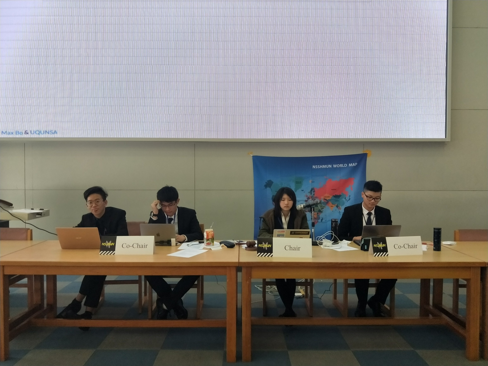
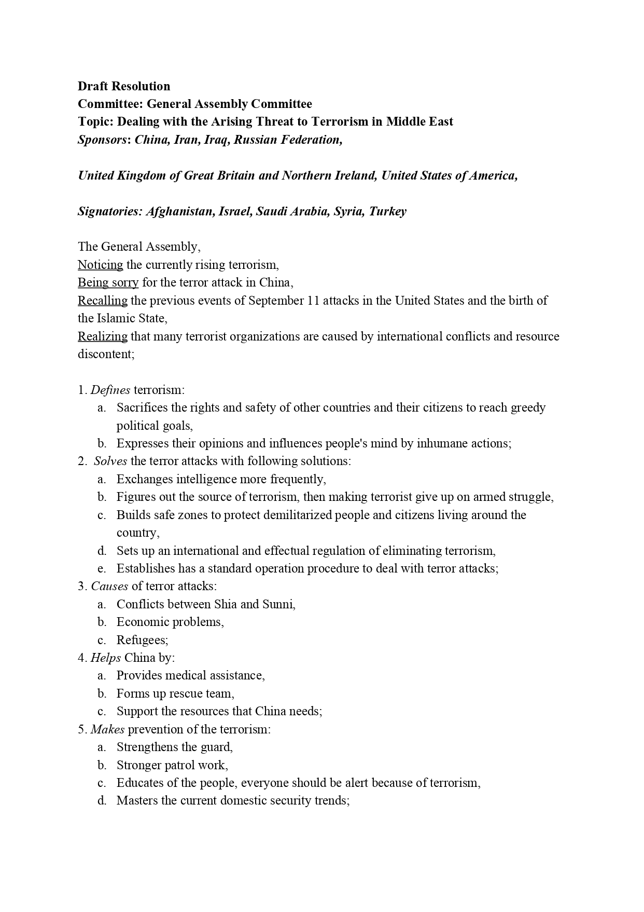
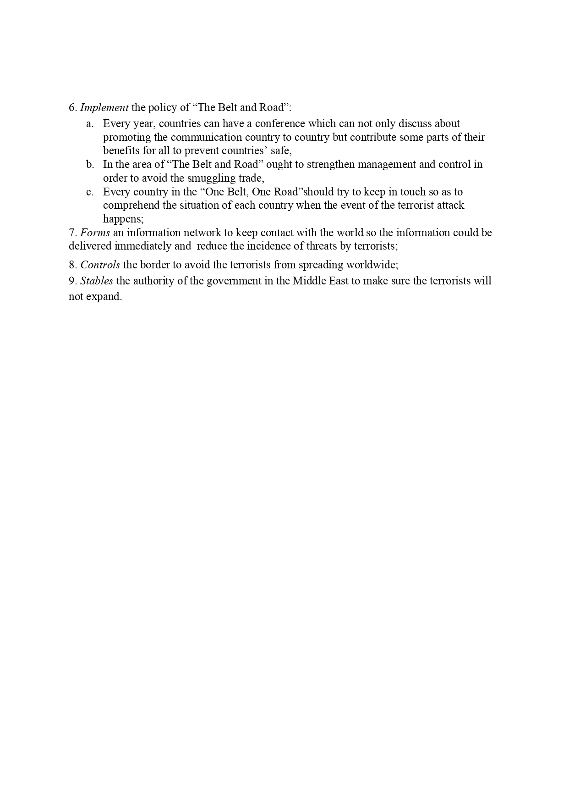
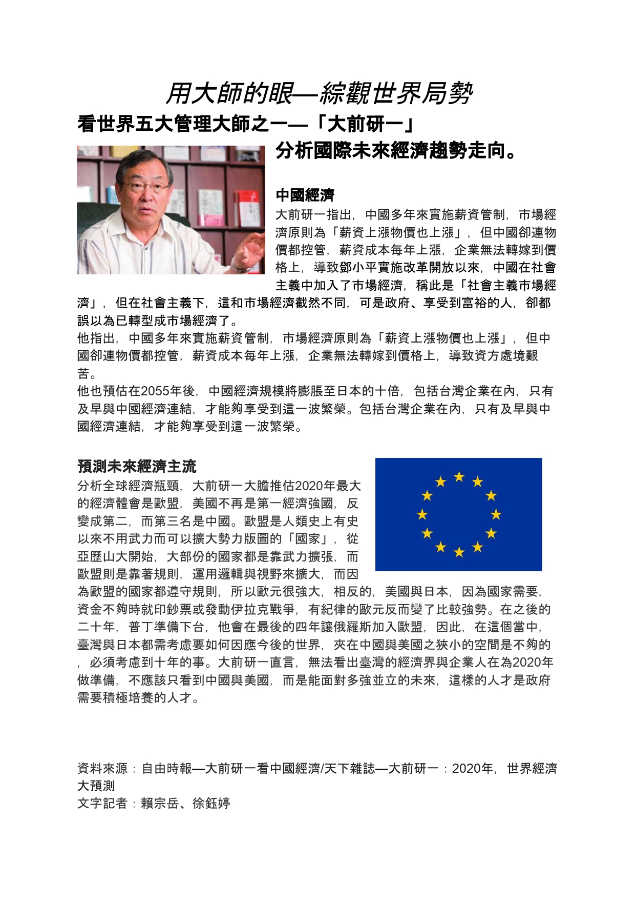

模擬聯合國（英語：Model United Nations，縮寫MUN）是一種學術性質活動，藉由精簡後的聯合國議規舉行模擬會議，使與會者瞭解多邊外交的過程，培養分析公民議題的能力，促進世界各地學生的交流，增進演講和辯論能力，提高組織、策劃、管理、研究和寫作、解決衝突、求同存異的能力，訓練批判性思考、團隊精神和領導才能，同時認識不同文化，拓展國際視野，瞭解各國在歷史上或現實中的立場與處境。
下圖為我第一次當"會議主席"的經驗

以下文件是我在某次會議中所編寫的文件，我每次會議都是英文委員會，而在開會期間必須使用全英語溝通，藉此機會訓練自己英文的表達能力
 
在模聯中，除了參加會議，我們為了讓更多人了解世界議題與局勢，開始編寫、製作報導，也讓我們自己有撰寫報導的特殊經驗
